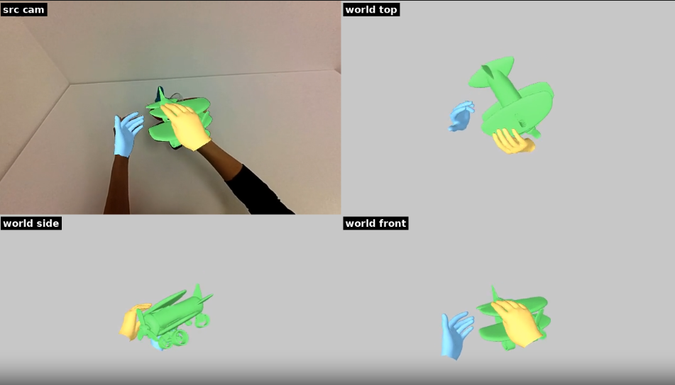

Object Path
Grounding DINO locates the prompted object, SAM2 tracks its mask, SAM3D builds a textured mesh, and FoundationPose estimates a smoothed 6D pose trajectory.
Package Docs
Turn human demonstration video into geometric reconstructions with the reconstruction components available in Video to Data.

Video to Data includes a variety of reconstruction packages for recovering human, hand, and object trajectories from demonstration video. These outputs can be used by downstream tasks such as motion retargeting, robot simulation, policy training, and dataset analysis.
The reconstruction stack is modular: depth estimation, segmentation, mesh generation, object pose tracking, hand/body reconstruction, calibration, and visualization are separate tools with file-based inputs and outputs. That makes pipelines easier to resume, debug, compare, and extend as better models become available.
The current first-class workflow is
modules/v2d_pipelines/run_v2d_ego_e2e.py. Given an MP4
and a text prompt for the held object, it runs an end-to-end
egocentric hand-object reconstruction flow. The pipeline first
undistorts footage into a pinhole camera model, then estimates the
object, hands, depth, pose trajectory, and final alignment.
Grounding DINO locates the prompted object, SAM2 tracks its mask, SAM3D builds a textured mesh, and FoundationPose estimates a smoothed 6D pose trajectory.
Ego hand reconstruction recovers hand motion, converts hand records and intrinsics into pipeline formats, and re-expresses tracks for alignment.
MoGe depth provides the metric cues for mesh scale estimation, object tracking, EKF smoothing, and hand-object alignment.
The pipeline writes overlay and multi-view videos so object poses, hand tracks, and alignment quality can be checked without opening raw artifacts manually.
A run produces a structured output directory with extracted frames, depth maps, camera intrinsics, object masks, a textured object mesh, raw and smoothed object poses, hand reconstruction records, aligned hand tracks, and rendered diagnostic videos. The key reusable outputs are the scale-corrected object mesh, the smoothed per-frame object poses, and the depth-aligned hand records.
The pipeline is resumable: each step checks for its existing artifacts and skips completed work, which is important for long GPU reconstruction jobs and model-comparison runs.
The full setup guide still lives in the repository while this web page is expanded with installation steps, diagrams, examples, and generated references for module entry points.